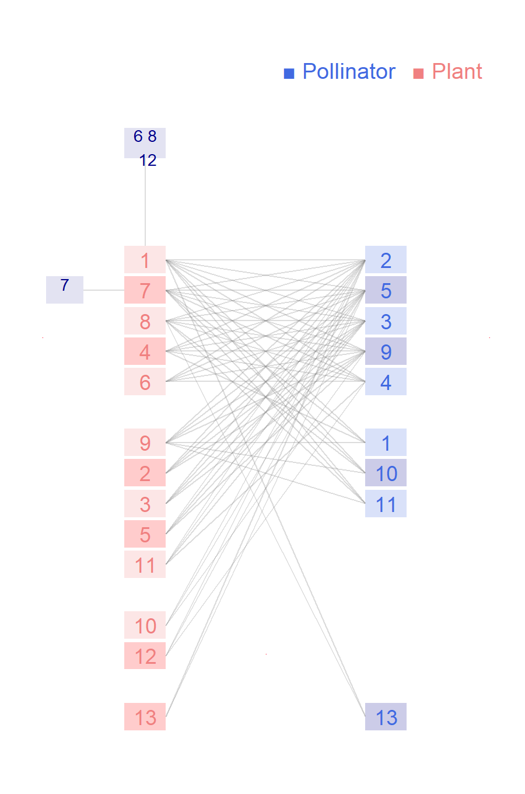

Network: M_PL_059

Pollinator 1 Apis.mellifera, 2 Centris.aenea, 3 Centris.caxiensis, 4 Centris.flavifrons, 5 Centris.fuscata, 6 Centris.obsoleta, 7 Centris.sp1.M_PL_059, 8 Centris.sp2.M_PL_059, 9 Centris.tarsata, 10 Centris.trigonoides, 11 Epicharis.sp1.M_PL_059, 12 Xylocopa.grisescens, 13Xylocopa.sp1.M_PL_059
Plant
1 Banisteriopsis muricata, 2 Banisteriopsis schizoptera, 3 Banisteriopsis stellaris, 4 Byrsonima gardnerana, 5 Carolus chasei, 6 Dicella bracteosa, 7 Diplopterys pubipetala, 8 Heteropterys sp1 M_PL_059, 9 Heteropterys sp2 M_PL_059, 10 Janusia anisandra, 11 Stigmaphyllon auriculatum, 12 Stigmaphyllon ciliatum, 13Stigmaphyllon paralias
Bezerra ELS, Machado ICS, Mello MAR. 2009. Pollination networks of oil-flowers: a tiny world within the smallest of all worlds. Journal of Animal Ecology 78:1096-1101. Parque Nacional do Catimbau